Informe Estadísticas de Género de Profesionistas en las Industrias de Aeronáutica y Aeroespacial. Primer trimestre de 2023-2do trimestre de 2024.
Introducción
MIAA (Mujeres en la Industria Aeronáutica y Aeroespacial) en su labor de fomentar la equidad de género en la industria aeroespacial y aeronáutica realizó el siguiente informe, que tiene como objetivo presentar estadísticas sobre la situación de género en el entorno mexicano, enfocándose en profesiones clave de estas industrias. Este documento busca crear conciencia sobre la realidad que enfrentan las mujeres en estos sectores, incluyendo la falta de representación laboral, la desigualdad salarial y la disparidad en los tiempos de jornada en comparación con sus colegas hombres. Además, pretende contribuir a la toma de decisiones en el ámbito gubernamental, privado y en la sociedad civil para promover la equidad de género.
Metodología
La estimación de las cifras para cada profesión, correspondientes al periodo del primer trimestre de 2023 al segundo trimestre de 2024, se realizó por medio de los datos trimestrales de la Encuesta Nacional de Ocupación y Empleo (ENOE) del Instituto Nacional de Estadística y Geografía (INEGI). Esta encuesta es la principal fuente de información sobre el mercado laboral mexicano al ofrecer datos mensuales y trimestrales de la fuerza de trabajo, la ocupación, la informalidad laboral, la subocupación y la desocupación. Asimismo, estas cifras se compararon con datos de otras fuentes, como artículos académicos e informes de organizaciones e instituciones nacionales internacionales. Lo anterior con el fin de tener un panorama más completo de la equidad de género en las industrias aeronáutica y aeroespacial.
Pilotos de Aviación
Representación laboral
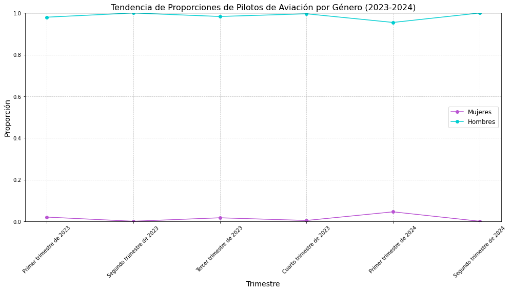
La representación de mujeres piloto en la industria de la aviación es significativamente baja. A lo largo del periodo analizado, las mujeres piloto constituyen menos del 0.05% de la fuerza laboral de pilotos en el sector. Sin embargo, se observa que el primer trimestre de 2024 registró una proporción mayor de mujeres piloto en comparación con trimestres anteriores. Desafortunadamente, esta tendencia no se mantuvo en el trimestre siguiente.
Brecha salarial
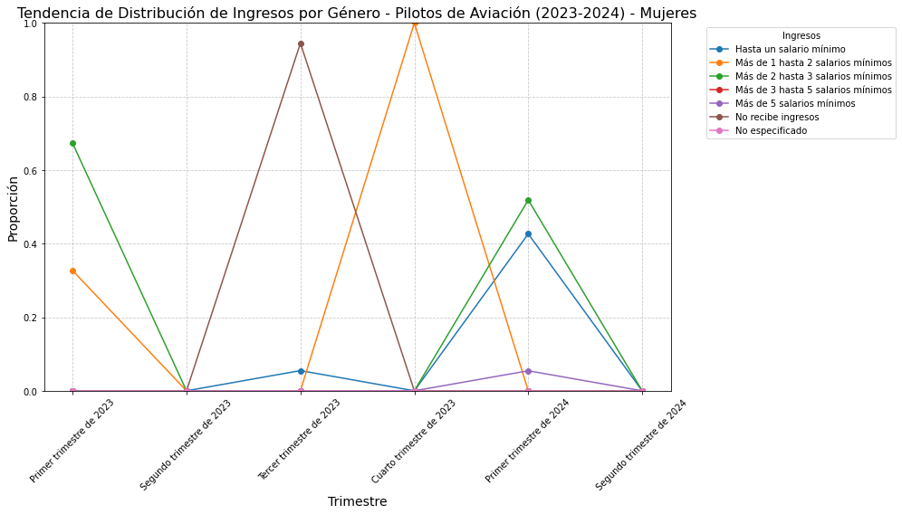 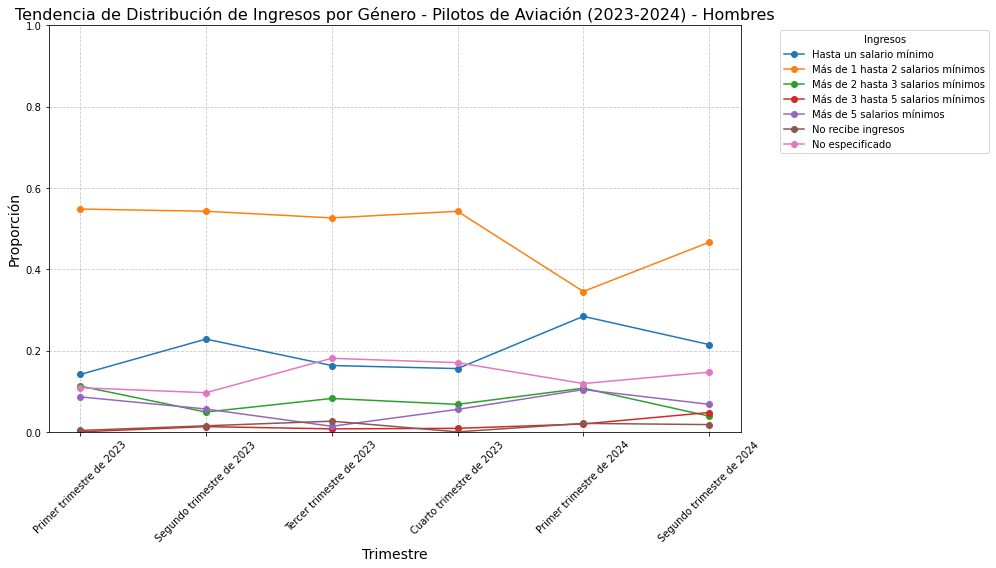
Al contrastar las tendencias de las distribuciones de ingresos entre hombres y mujeres desde el primer trimestre de 2023 al segundo trimestre de 2024, se perciben más constantes las proporciones de hombres que reciben los diferentes tipos de ingreso, en comparación con las proporciones de mujeres las cuales tienen variaciones más grandes. Asimismo, en las 3 categorías más altas de ingresos (4, 5 y 6) suelen estar más presentes los hombres que las mujeres.
Jornada laboral
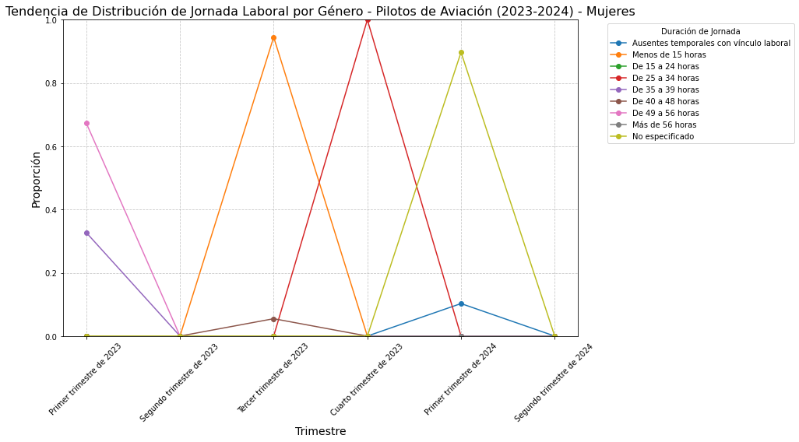 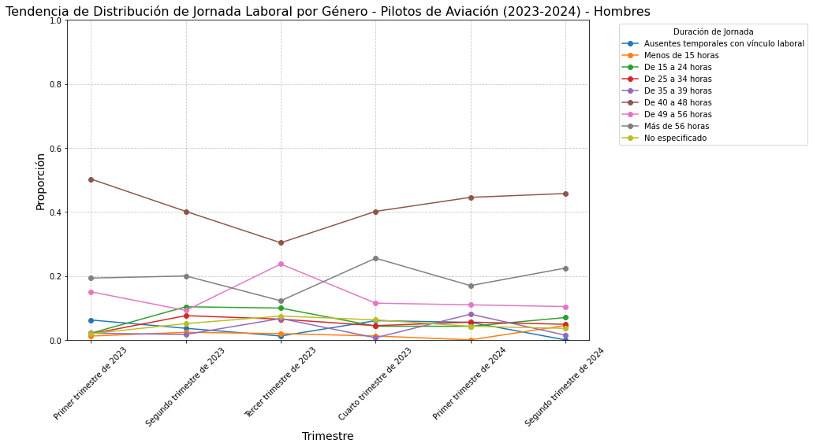
Durante el periodo analizado, se observa que los hombres presentan una mayor proporción de jornadas laborales superiores a 35 horas en comparación con las mujeres. Sin embargo, se registran excepciones en el primer trimestre, donde el 32.7% de las mujeres trabajaron entre 35 y 39 horas, y un 67.3% de ellas laboraron entre 49 y 56 horas. A pesar de esto, en los trimestres posteriores, la proporción de mujeres con jornadas de más de 35 horas es muy baja o, en algunos casos, nula.
Controladores de Tráfico Aéreo
Representación laboral
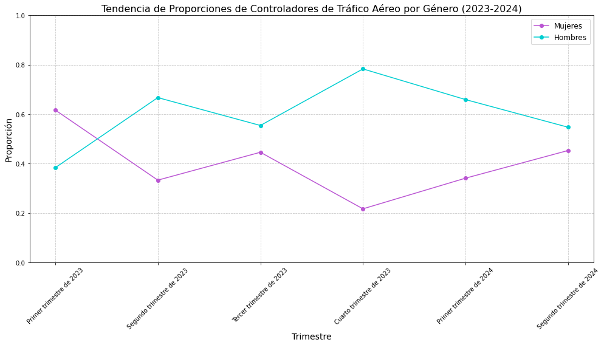
Entre el primer trimestre de 2023 y el segundo trimestre de 2024, se observa una tendencia de predominancia masculina en la ocupación de controladores aéreos. Sin embargo, en el primer trimestre de 2023, las mujeres representaron el 61% de la fuerza laboral en este campo. A partir del tercer trimestre de 2023 y hasta el segundo trimestre de 2024, la diferencia de género se redujo, mostrando una brecha menos pronunciada entre mujeres y hombres en esta profesión.
Brecha salarial
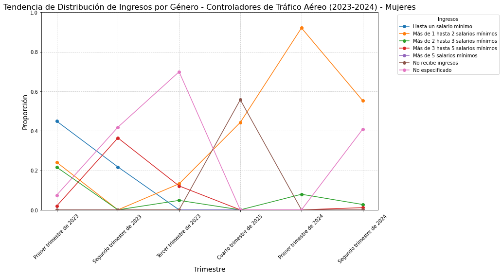 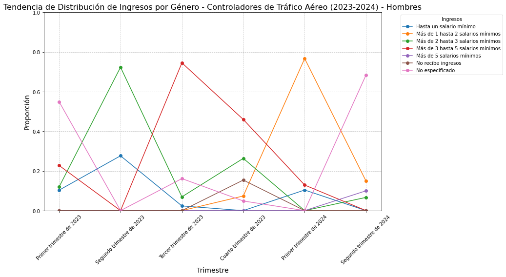
En cuanto a la distribución de ingresos de las mujeres, durante el primer trimestre se observó una mayor proporción de mujeres en comparación con los hombres en las categorías de ingresos 1, 2 y 3. Sin embargo, en la categoría 4, correspondiente a los salarios más altos, la proporción de hombres fue superior. Para el segundo trimestre de 2024, se registró una mayor proporción de mujeres en la categoría 2, mientras que la categoría 3 fue dominada por hombres. Finalmente, en la categoría 4, las mujeres superaron a los hombres de manera mínima.
Jornada laboral
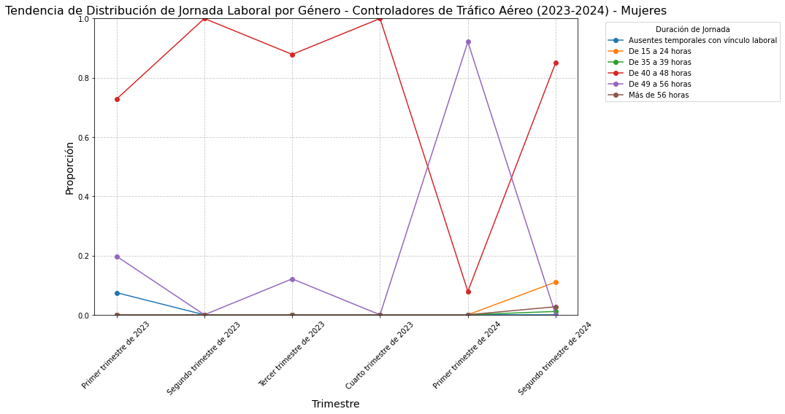 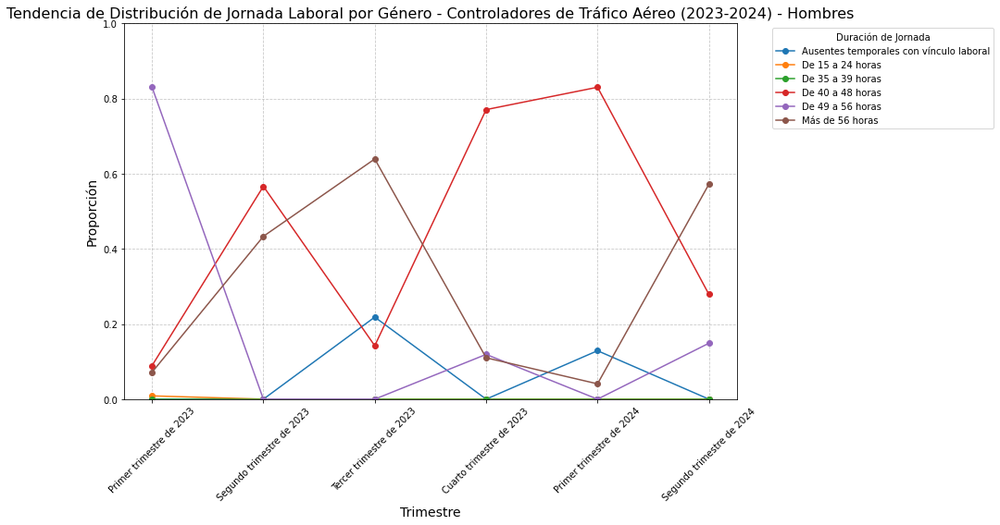
La duración de la jornada laboral entre hombres y mujeres controladores de tráfico aéreo mostró notables diferencias durante el periodo analizado. Las jornadas más largas, correspondientes a la categoría 8, se presentaron en todos los trimestres para los hombres, mientras que en el caso de las mujeres solo se registraron en el último trimestre, y con un porcentaje muy bajo. Las jornadas de la categoría 7 fueron comunes tanto para hombres como para mujeres; en el primer trimestre predominaron los hombres, pero en el tercer trimestre de 2023 y el primer trimestre de 2024, la proporción fue mayor para las mujeres. Sin embargo, en el segundo trimestre de 2024, los hombres nuevamente superaron a las mujeres en esta categoría. En cuanto a la categoría 6, se observó que, a lo largo de todo el periodo, las mujeres mantuvieron una mayor proporción de participación en estas jornadas en comparación con los hombres.
Ingenieros Mecánicos1
Representación laboral
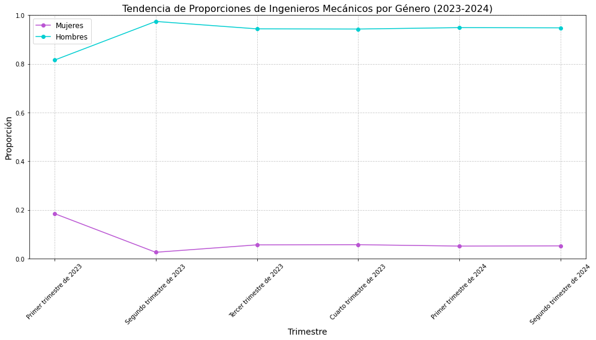
En la profesión de ingeniería mecánica es notable la baja representación de mujeres. En el caso del primer trimestre de 2023, la representación de hombres fue de 82% y la de mujeres de 18%. Mientras que, en el resto de los trimestres la representación de hombres superó al 94% y la de mujeres estuvo por debajo del 6%.
Brecha salarial
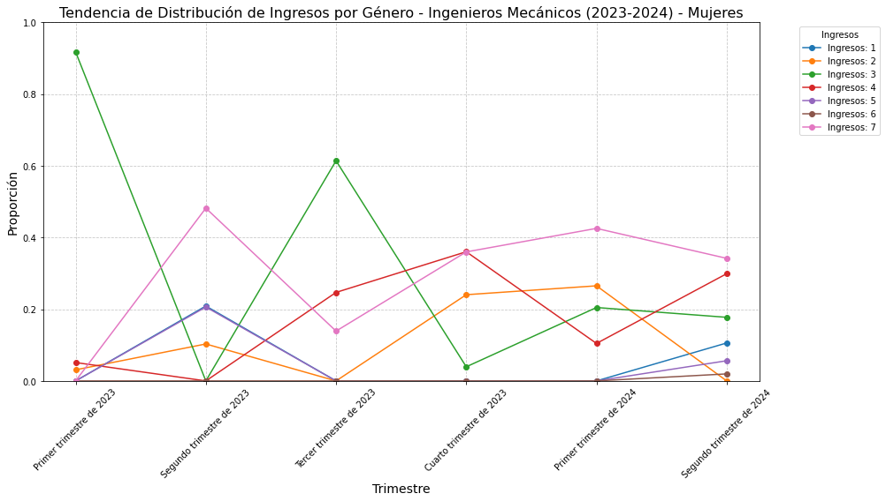 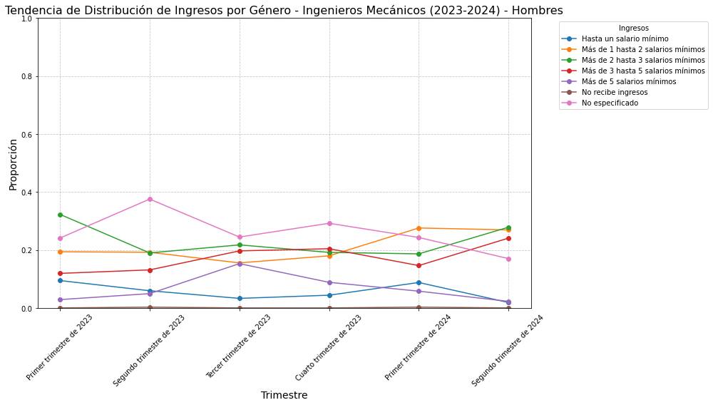
Al comparar la distribución de ingresos por género, se observa que las categorías de ingresos de los hombres fueron menos variables que las de las mujeres entre el primer trimestre de 2023 y el segundo trimestre de 2024. Durante este periodo, el tipo de ingreso 1 fue más frecuente entre los hombres que entre las mujeres. El tipo de ingreso 2 también mostró una mayor proporción de hombres, excepto en el cuarto trimestre de 2023. En el tipo de ingreso 3, las mujeres superaron a los hombres por más de 59 puntos porcentuales en el primer trimestre de 2023, pero en el segundo trimestre de 2024, los hombres superaron a las mujeres por 10 puntos porcentuales. En cuanto al tipo de ingreso 4, los hombres dominaron en el primer trimestre, mientras que en el último trimestre las mujeres fueron mayoría. Finalmente, el tipo de ingreso 5 se presentó en todos los trimestres para los hombres, pero no para las mujeres.
Jornada laboral
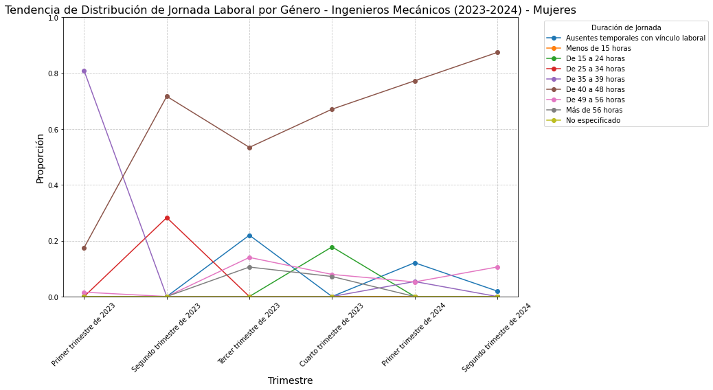 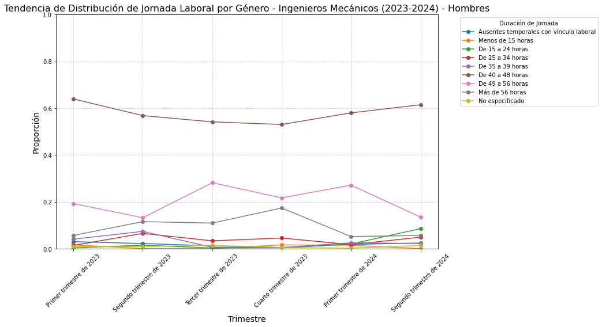
En cuanto a la duración de la jornada laboral por género, entre el primer trimestre de 2023 y el segundo trimestre de 2024, la jornada más predominante para ambos géneros fue la de tipo 6. Para las mujeres ingenieras mecánicas, este tipo de jornada representó el 17% en el primer trimestre del periodo analizado y aumentó significativamente al 87% en el último trimestre. En el caso de los hombres, la jornada de tipo 6 mantuvo una proporción superior al 60% tanto en el primer como en el último trimestre del periodo.
Otros Médicos Especialistas2
Representación laboral
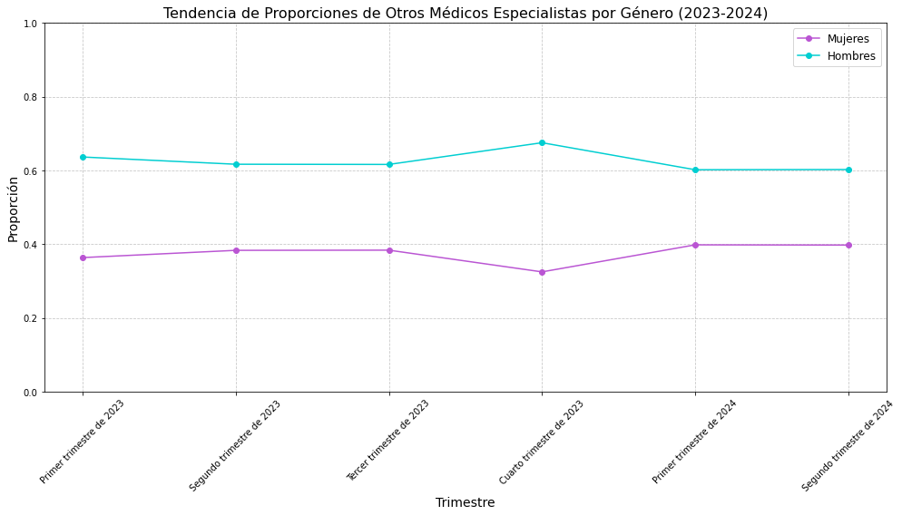
En el caso de “otros médicos especialistas”, la brecha de género es igual o menor a 36% en el periodo analizado. Las mujeres representan más del 30% de la fuerza laboral de estas profesiones; por parte de los hombres, su representación supera al 60%.
Brecha salarial
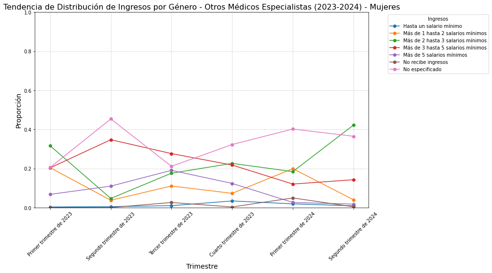 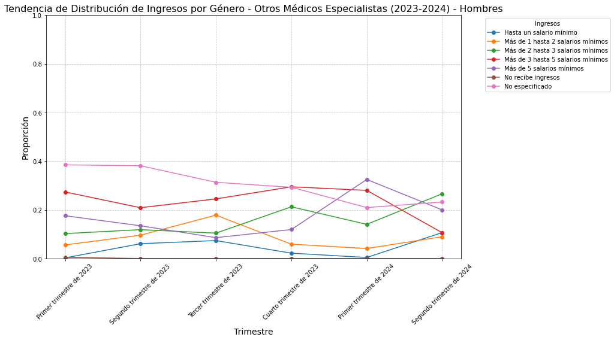
En el caso del ingreso más bajo, tipo 1, se observó que, en promedio, los hombres tuvieron una mayor proporción que las mujeres en recibirlo durante el periodo analizado. En contraste, para el ingreso más alto, tipo 5, la proporción de hombres fue superior a la de las mujeres tanto en el primer trimestre de 2023 como en el segundo trimestre de 2024.
Jornada laboral
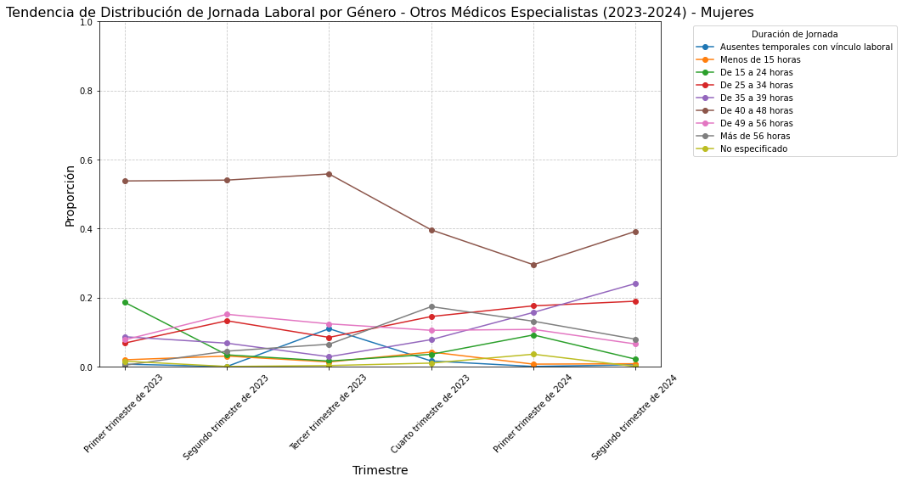 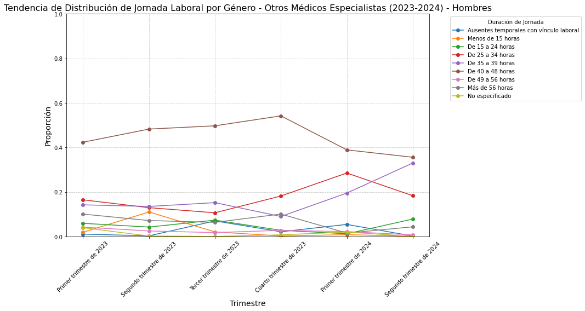
En cuanto a la distribución de la jornada laboral por género durante el periodo analizado, se identificó que tanto en mujeres como en hombres la jornada de tipo 6 fue la más predominante en comparación con otros tipos de jornadas. Entre el primer y el tercer trimestre de 2023, esta jornada tuvo una mayor proporción de hombres, pero la tendencia se invirtió en el cuarto trimestre de 2023 y el primer trimestre de 2024, con más mujeres. Por otro lado, la jornada más larga, tipo 8, presentó una mayor proporción de hombres en el primer trimestre de 2023, con una diferencia de 7 puntos porcentuales sobre las mujeres. Sin embargo, para el segundo trimestre de 2024, las mujeres superaron a los hombres en esta jornada por 4 puntos porcentuales.
Mecánicos en Mantenimiento y Reparación de Vehículos de Motor3
Representación laboral
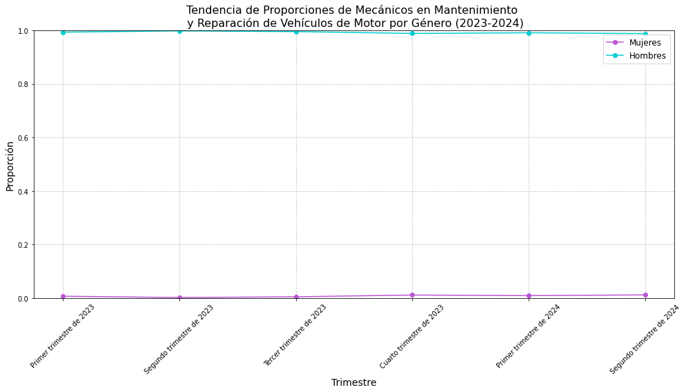
Con respecto a las personas mecánicas en mantenimiento y reparación de vehículos de motor, la representación de las mujeres es significativamente baja en el periodo analizado. Por lado de los hombres, su proporción es igual o superior al 99% en la fuerza laboral de este sector, mientras que las mujeres tienen una proporción de 1% o menos.
Brecha salarial
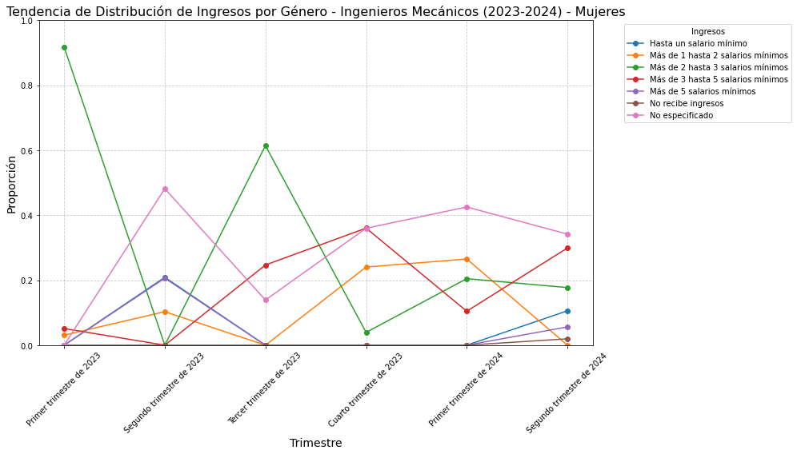 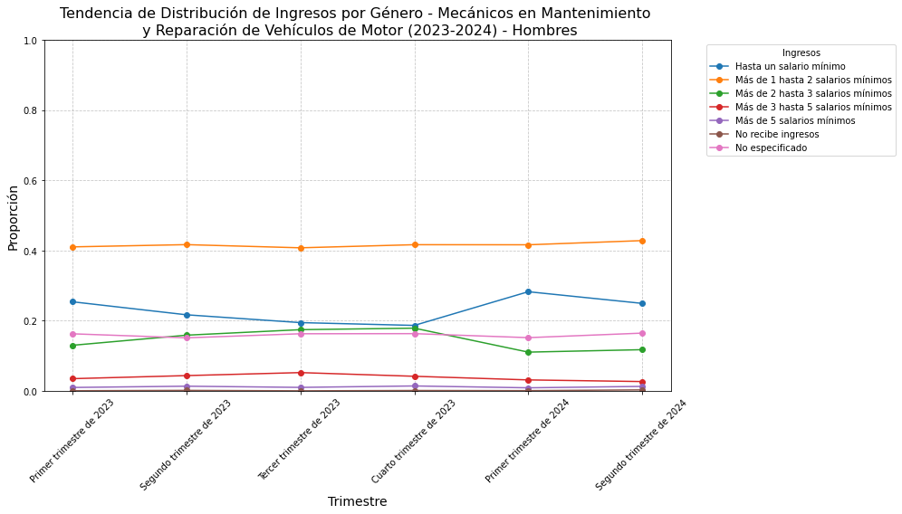
En cuanto a la distribución de ingresos por género, los hombres mostraron menores tasas de variabilidad en los diferentes tipos de ingresos a lo largo del periodo analizado, en comparación con las mujeres. El ingreso más bajo, tipo 1, presentó una mayor proporción de hombres que de mujeres tanto en el primer trimestre de 2023 como en el último trimestre analizado. Por otro lado, el ingreso más alto, tipo 5, tuvo una proporción cercana a cero para los hombres durante todo el periodo, mientras que no se registraron ocurrencias para las mujeres.
Jornada laboral
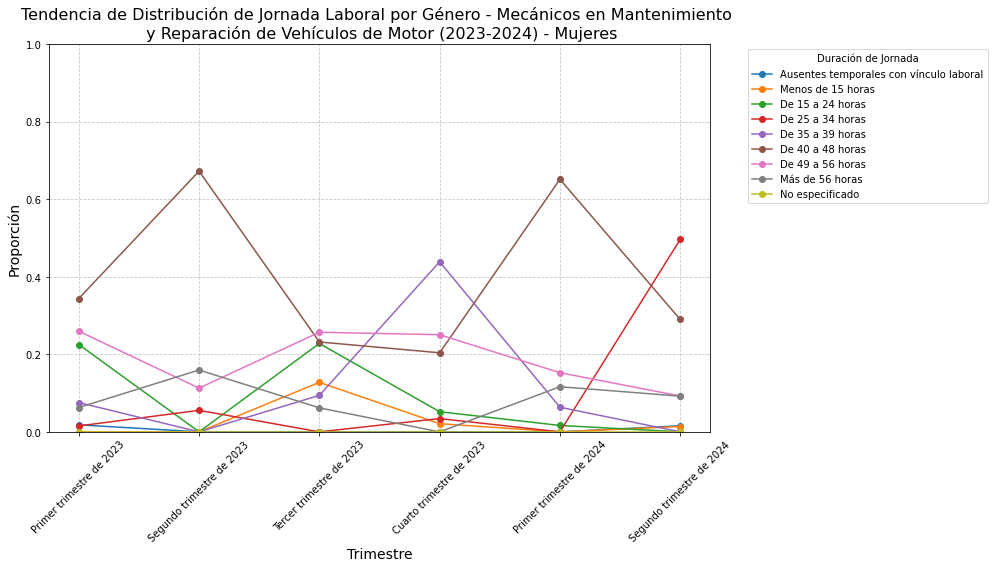 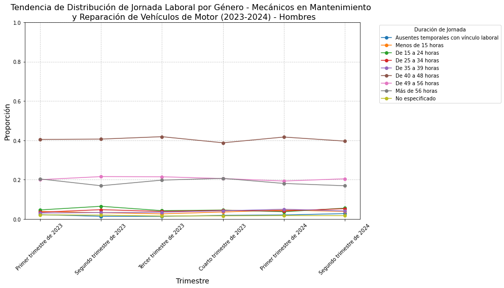
En la gráfica sobre la distribución de la duración de la jornada laboral, se observa que los tipos de jornada laboral presentaron menores fluctuaciones para los hombres en comparación con las mujeres durante el periodo analizado. En el caso de las mujeres, la jornada de tipo 6 fue la que registró mayor proporción en la mayoría de los trimestres. Para los hombres, este mismo tipo de jornada mantuvo la mayor proporción a lo largo de todo el periodo. Al analizar la jornada más larga, tipo 8, se identificó que tanto en el primer trimestre de 2023 como en el segundo trimestre de 2024, los hombres superaron a las mujeres en proporción. En cuanto a la jornada más corta, tipo 2, no se registraron ocurrencias en varios trimestres para las mujeres; sin embargo, en el tercer trimestre de 2023, las mujeres superaron a los hombres por un 10% en la proporción de esta jornada.
Sobrecargos
Representación laboral
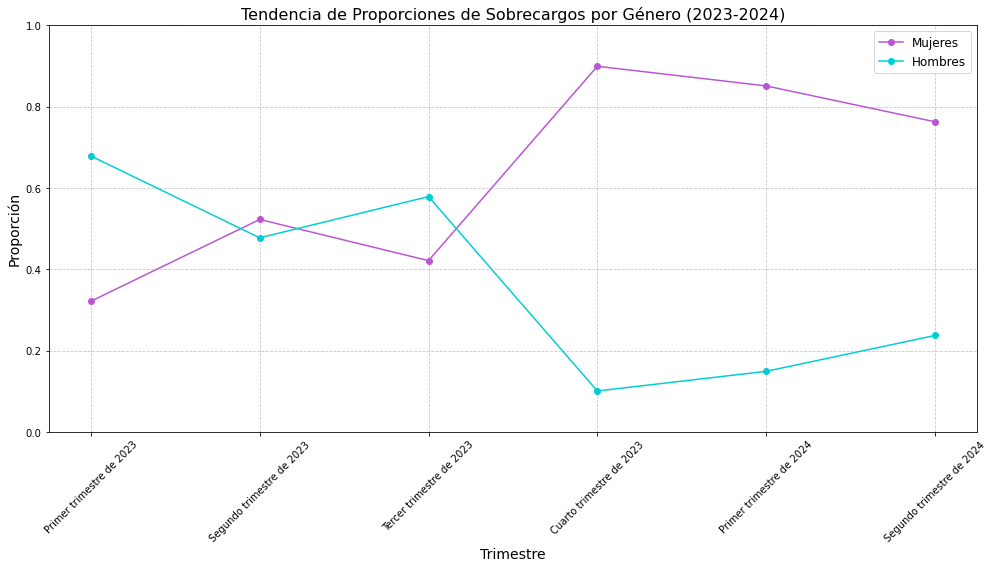
Para la profesión de sobrecargo, se observa una tendencia de crecimiento de la representación de mujeres: en el primer trimestre de 2023 tuvieron una proporción de 32% del total de la fuerza laboral, no obstante, en el segundo trimestre de 2024 ocuparon el 76%.
Brecha salarial
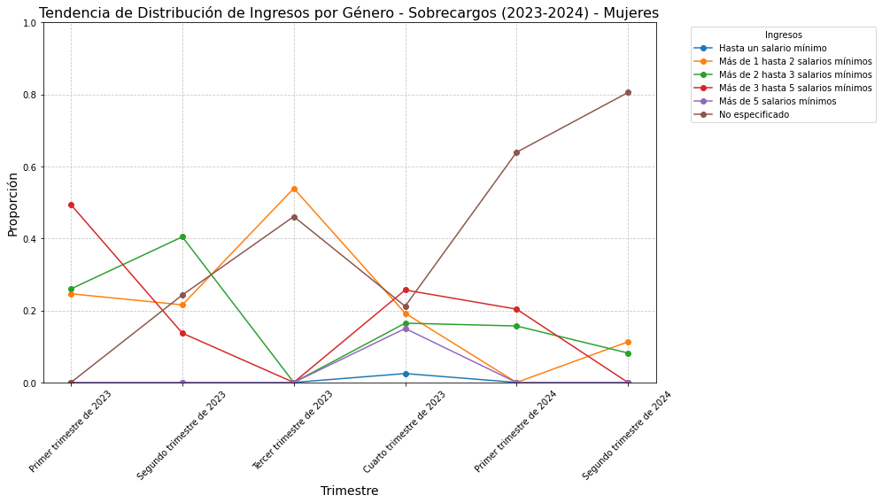 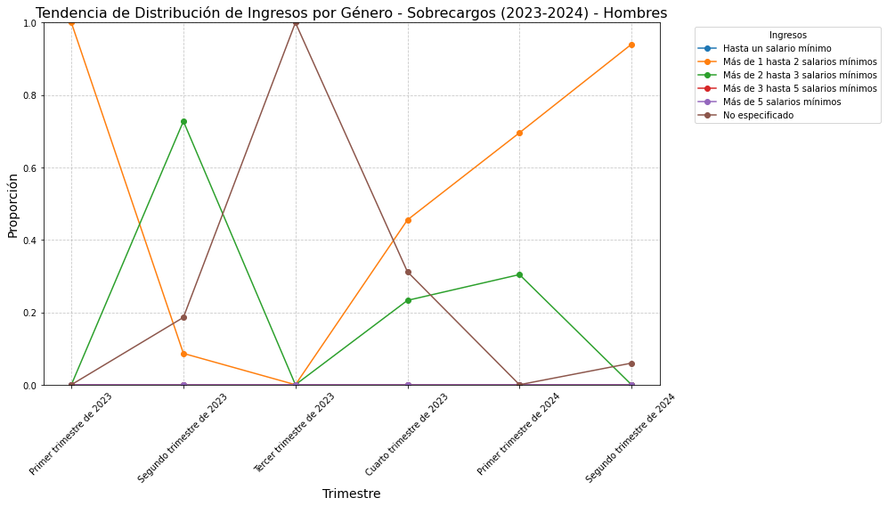
En la distribución de ingresos por género, se observan variaciones significativas en las proporciones de cada tipo de ingreso durante el periodo analizado, tanto para hombres como para mujeres sobrecargos. En relación con el ingreso más bajo, tipo 2, en el primer semestre de 2023, todos los hombres encuestados reportaron recibirlo, mientras que solo el 25% de las mujeres indicó lo mismo. En el último periodo analizado, el segundo trimestre de 2024, el 94% de los hombres informaron recibir el ingreso tipo 2, en contraste con solo el 11% de las mujeres. En cuanto al ingreso más alto, tipo 5, no se registraron ocurrencias para los hombres, mientras que las mujeres reportaron una ocurrencia en el cuarto trimestre de 2023.
Jornada laboral
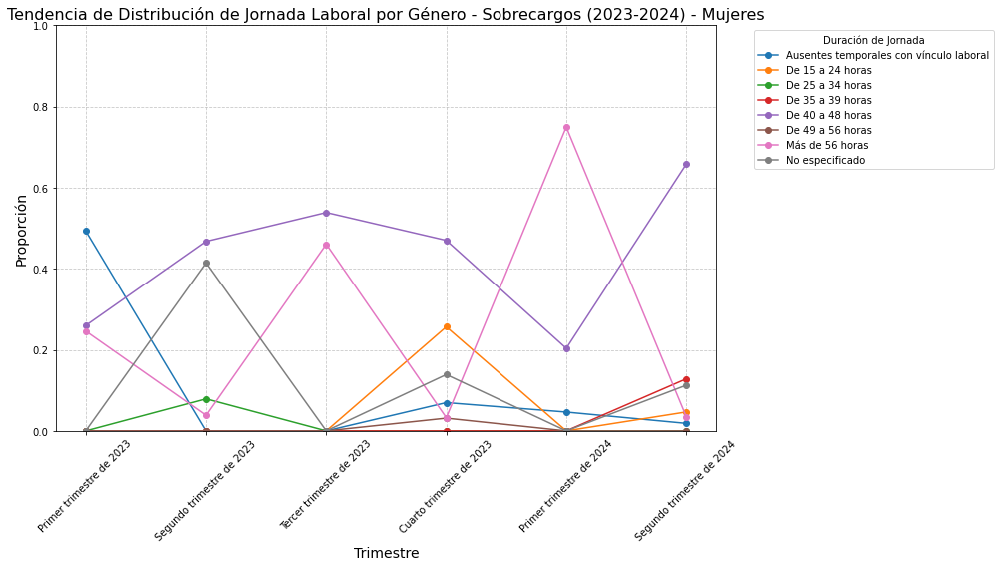 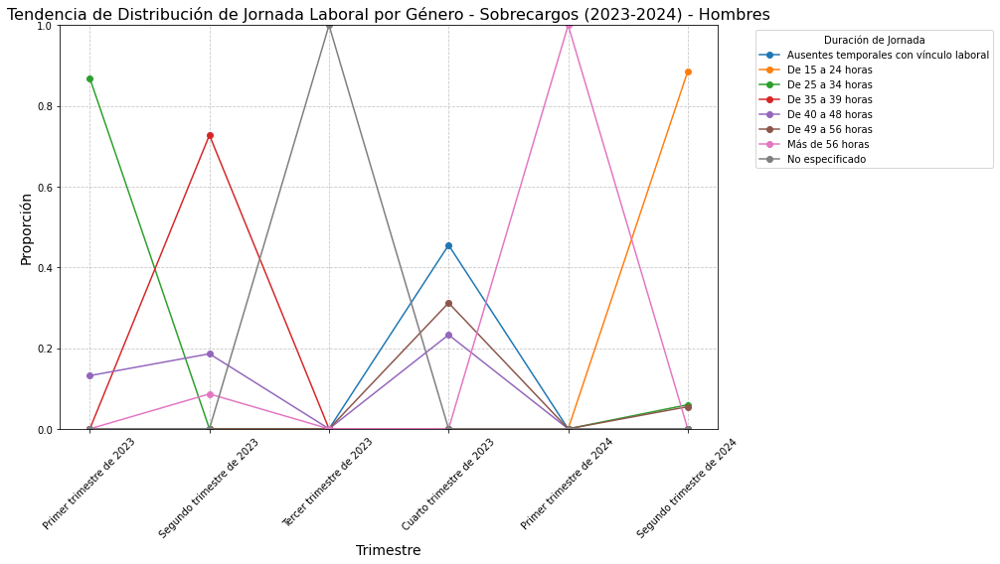
Las distribuciones de las duraciones de las jornadas laborales para ambos géneros muestran grandes variaciones en las proporciones de cada tipo de jornada a lo largo de los trimestres investigados. Es importante destacar que, para ambos géneros, la jornada mínima registrada fue la de tipo 3. En cuanto a la jornada más larga, tipo 8, esta se presentó en todos los trimestres para las mujeres; sin embargo, en el caso de los hombres, solo se registraron ocurrencias en el segundo trimestre de 2023 y en el primer trimestre de 2024.
Trabajadores de la Fuerza Aérea
Representación laboral
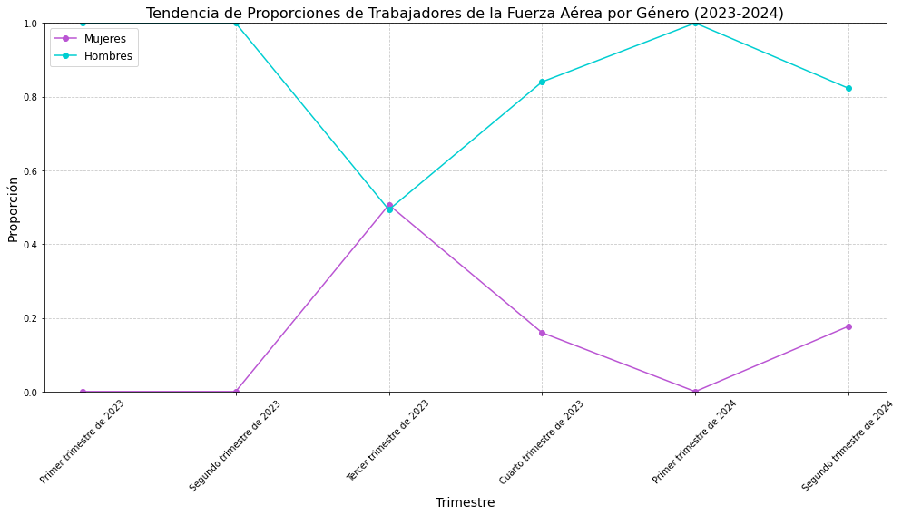
La fuerza laboral de la fuerza aérea estuvo, en la gran parte de los trimestres analizados, representada por mayor proporción de hombres que de mujeres. Del primer trimestre de 2023 al segundo trimestre de 2023, los hombres representaron el total de la fuerza laboral. En el tercer trimestre de 2023, las mujeres comenzaron a tener representación, y por 1 % superaron a la proporción de hombres, no obstante, en los trimestres siguientes la proporción de mujeres comenzó a disminuir, finalizaron el segundo trimestre de 2024 con 18% de proporción de trabajadores de este campo.
Brecha salarial
 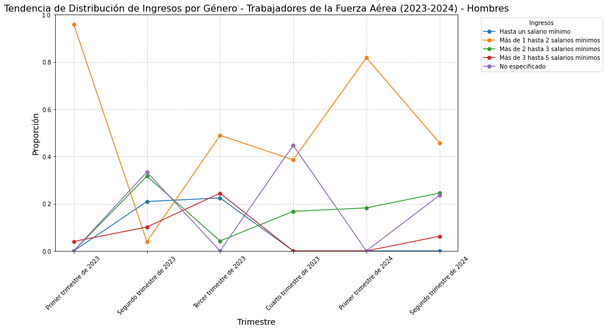
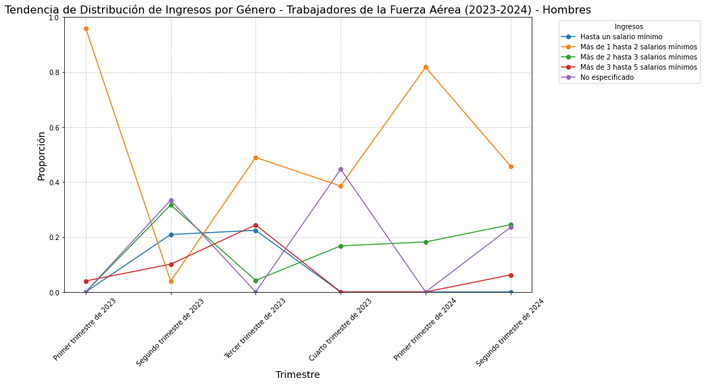
En la representación visual de la distribución de ingresos para las mujeres de la fuerza aérea, no se observan tendencias claras en los tipos de ingresos a lo largo del periodo analizado. Sin embargo, se identifica que en el tercer trimestre de 2023, la mayoría de las mujeres percibió ingresos del tipo 3; en el cuarto trimestre de 2023, la mayoría recibió ingresos del tipo 4; y en el segundo trimestre de 2024, todas las mujeres reportaron ingresos del tipo 2. En contraste, entre los hombres, los ingresos de tipo 2 fueron recibidos por la mayor proporción de hombres durante el periodo analizado.
Jornada laboral
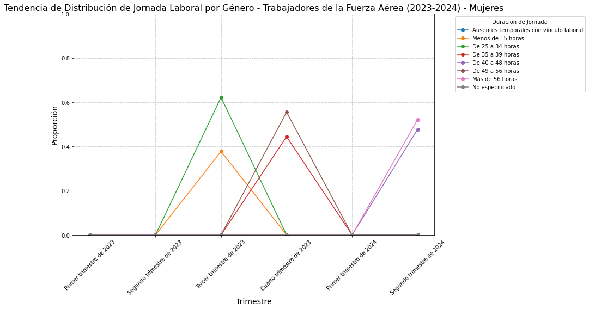 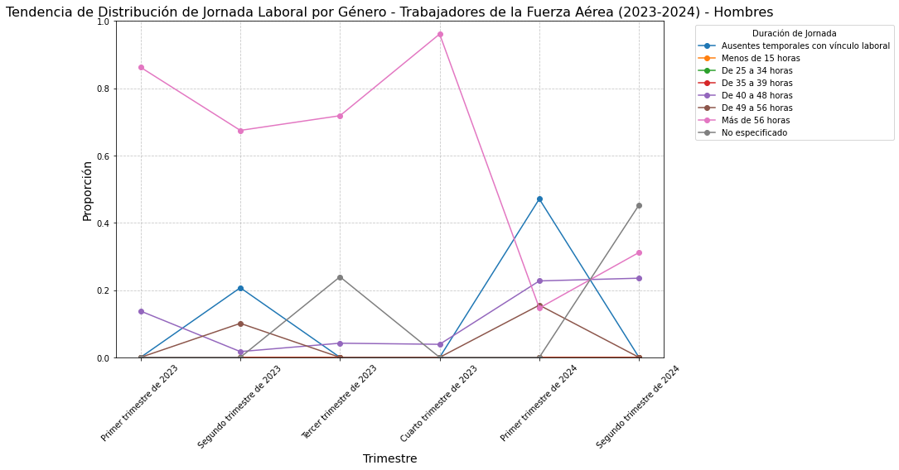
Al igual que en el indicador anterior, no se identifican tendencias claras en la distribución de la duración de la jornada laboral para las mujeres. En el caso de los hombres, se observa que el tipo de jornada 8 predominó a lo largo del periodo analizado.
Footnotes
Según el Sistema Nacional de Clasificación de Ocupaciones (SINCO) 2019 del INEGI, los ingenieros mecánicos se definen como “Los profesionistas clasificados en este grupo unitario investigan, diseñan y desarrollan proyectos de manufactura de motores, equipos, máquinas industriales y para la construcción y dirigen o asesoran su fabricación, funcionamiento, mantenimiento y reparación. Comprende a los supervisores de trabajadores que realizan actividades de asesoría e investigación en ingeniería mecánica.” Además, sus ocupaciones son: ingeniería en materia aeroespacial, ingeniería en diseño mecánico e ingeniería mecánica. Entre sus funciones están: diseñar proyectos de manufactura de motores, equipos, máquinas industriales y para la construcción; desarrollar procedimientos a seguir para la producción, instalación y prueba de motores, equipos, máquinas industriales y para la construcción; detectar y, en su caso, corregir fallas mecánicas o problemas derivados de la manufactura, instalación y/o puesta en marcha de los motores, equipos, máquinas industriales y para la construcción.↩︎
Según el Sistema Nacional de Clasificación de Ocupaciones (SINCO) 2019 del INEGI, “otros médicos especialistas” se definen como los “profesionistas clasificados en este grupo unitario tienen una formación especializada, diagnostican y tratan las enfermedades, trastornos fisiológicos y lesiones de los pacientes, relacionados con su especialidad”. Asimismo, las ocupaciones de este grupo son: medicina aeroespacial, audiología, dermatología, foniatría, medicina de rehabilitación, medicina de urgencias, medicina del deporte, medicina del trabajo, oftalmología y otorrinolaringología. Entre sus funciones está, “estudiar los efectos biológicos, fisiológicos y psicológicos de la microgravedad y los vuelos espaciales”.↩︎
Según el Sistema Nacional de Clasificación de Ocupaciones (SINCO) 2019 del INEGI, los mecánicos en mantenimiento y reparación de vehículos de motor se definen como las personas trabajadoras que “examinan, reparan, ajustan y dan mantenimiento preventivo a los sistemas de combustión, transmisión, frenos y suspensión de vehículos automotores, como camiones de reparto, motocicletas; y otros vehículos automotores, como aviones, barcos, etcétera.” Las ocupaciones de este grupo son reparador de vehículos de motos y mecánico automotriz. Entre sus funciones, se consideran las de ajustar, examinar, probar y mantener motores de aviones; reparar, ajustar o, en su caso, reemplazar las partes dañadas tales como el motor, sub ensambles de la dirección, suspensión, transmisión y otras partes de los sistemas o mecanismos de vehículos, de acuerdo con las normas y especificaciones establecidas; y realizar servicios de mantenimiento programado como cambios de aceite, lubricantes y afinado de motor.↩︎